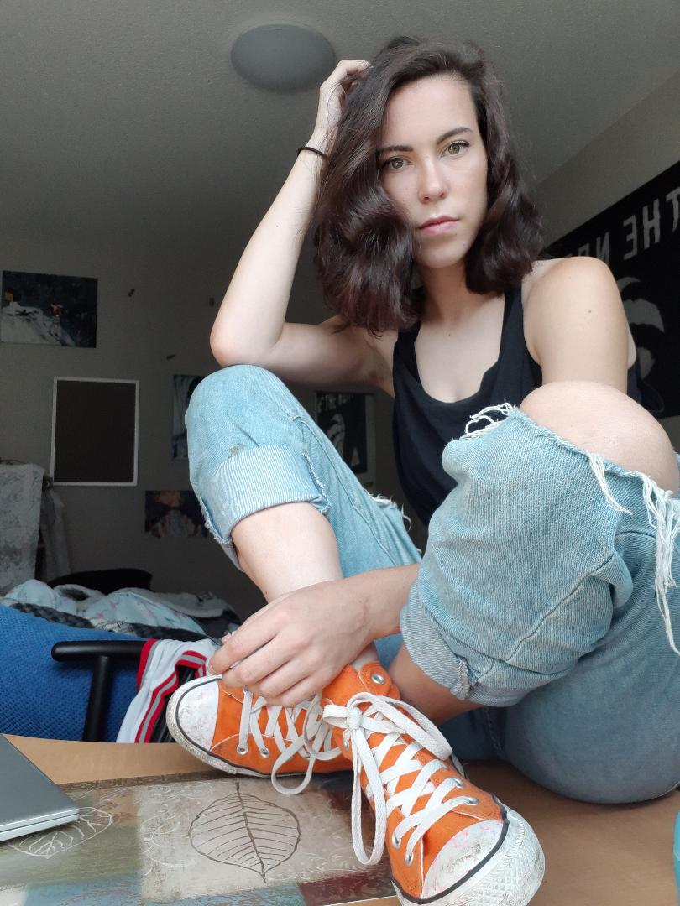

Kathleen MacDonald

Fun Facts
- I have an identical twin sister named Erin
- I went to the University of Waterloo for Anthropology before coming here
- I play basketball competitively; and will play for Fanshawe second year
Hobbies
- Playing multiple sports
- Spending time with family
- Travelling
- Reading
Favorites
- Flower-Sunflower
- Food-Mexican
- Color-Green
I was born December 19,1996 in Ancaster, Ontario. I have a twin sister named Erin, and an older sister named Maggie. I have always loved art and my mediumnis painting and indian ink. I always wanted to do something design related; was looking into graphic design but have chosen interactive media design instead as I wanted to learn coding and be more of an asset to the design industry.
I am an avid athlete as well loving all forms of sport and working out. I am half irish and scottish and have visited Ireland several times. I also hope to have my art shown in the Art Gallery of Hamilton soon!
Art Gallery